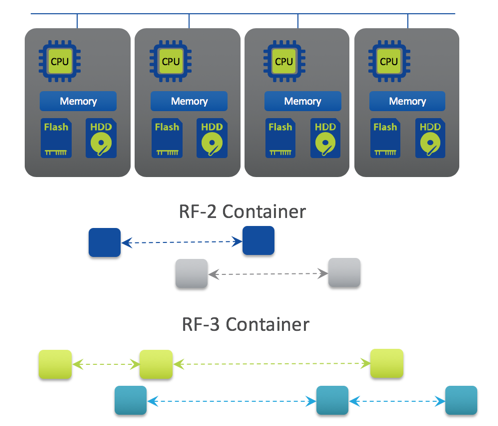

Nutanix Terminology¶
Nutanix HCI¶

Storage Pools and Containers¶
Nutanix presents the physical disks as one Storage Pool, that can be divided into one or more Containers.

Nutanix Storage¶
Tunable Redundancy¶
What is it?
- Configure different levels of fault tolerance for different applications dynamically
- Works with EC-X for capacity savings
Points of differentiation:
- Software-defined. No prior understanding of storage required
- RF-3 offers protection against two simultaneous disk, node and NIC failures
- Switch between RF-2 and RF-3
- Replication set at the container level

Nutanix EC-X (Erasure Coding)¶
- No overhead to the active write path
- Background job
- Only cold data is subject to EC-X
- Lower rebuild times (equal or better than RF2)
- Patent pending algorithm

Deduplication¶
- Inline fingerprinting with post-process deduplication
- Distributed across all nodes – true scale-out
- Global deduplication across entire cluster
- SHA-1 fingerprinting offloaded to Intel processors for greater efficiency
- 100% software-defined
- Strong hash allows dedupe to happen based on metadata match

Compression¶
- Inline and post-process compression
- Inline: Data compressed as it’s written
- MapReduce: Data compressed after “cold” data is migrated to lower-performance storage tiers
- No impact to normal IO path
- Ideal for random batch workloads
- Uses LZH4c algorithm (AOS 5+)
Data Locality¶
- Keep data on the same node as VM
- All read operations localized on same node
- ILM transparently moves remote data to local controller
- Reduces network chattiness significantly
- Data follows VM during vMotion/Live Migration

Intelligent Tiering¶
Automatic Performance Optimization
- Leverage multiple tiers of storage
- Continuously monitors data access patterns
- Optimally places data for best performance
- No user intervention required
Hot Data - SSD
- Random data
- Persistent tier
- Maximum performance
Cold Data - HDD
- Sequential data
- Highest capacity
- Most economical

CVM Auto-Pathing¶
What is it?
- Continue to access data through CVM failures
- Hypervisor routing is updated automatically to use another CVM
Benefits
- High availability during software upgrades and failures
vMotion/DRS or Live Migration¶
Seamless VM Migration
- Metadata service can access data from anywhere
- Locality improves over time

Nutanix VM Mobility¶
Acropolis Dynamic Scheduling (ADS)¶
- Automatic Detection, and remediation of CPU and storage hot-spots
- Initial VM Placement
- Following anomalies are detected:
- CPU hot spots
- Storage controller hot spots
- Affinity rule violation
- If anomalies are found, re-mediation by:
- Live migration of VMs
- ABS iSCSI session re-direction

Host High Availability¶
What it does
- Auto restart user VMs after host failure
- Policy enabled through Prism
- AHV picks the best admission control policy:
- Reserved segments (default)
- Reserved host
Benefits
- Always-on VMs
- Reduced administrative overhead
Affinity Rules - Host¶
VM-Host Affinity:
- Place and always keep a powered ON VM on selected group of hosts
Use Cases:
- SW License Compliance
- Security / Governance
- Hardware Segmentation
“Must” rule - never violated by:
- Initial placement
- HA
- Host maintenance mode
- ADS
- Manual live migration
Affinity Rules - VM¶
VM-VM Anti-affinity:
- Place and always keep a group of powered ON VMs on different hosts.
Use Cases:
- VM HA fault domain separation (e.g. SQL cluster)
- Manual Hot Spot avoidance
“Should” rule – best effort but can be violated.

Nutanix Networking¶
AHV – Software Defined Networking¶
Fully distributed networking, based on open standards, simplifies deployment and ensures configuration consistency.
- Based on Open vSwitch
- Fully distributed to all nodes
- Virtual Networks w/vLANs
- IP Address Management (DHCP)
- Bond / Link Aggregation
- Active / Backup
- Source-NIC Load Balancing
- LACP
- Each bridge has a bond, backed by one or more uplinks

Flow (Microsegmentation)¶
Regain Visibility and Control Inside Your Datacenter
- All networking native in AHV (nothing to install)
- Logical grouping via Categories in Prism Central
- Categories group VM or Applications
- Security policies map to categories
- Management of category membership simplifies process
- Rules pushed from PC -> CVM -> AHV -> OVS
- AHV host OVS enforces rules
- Rules logical enforced at VM (vNIC) level
- Firewall in front of every VM

Flow Scenario – Environment Zoning with Isolation¶
- Isolating environments simplified through one-click policies.
- Predefined categories for environment-type makes policy writing easy - simply add VMs to the desired category
- Moving workloads across environments is simply swapping the categories from Dev to Prod